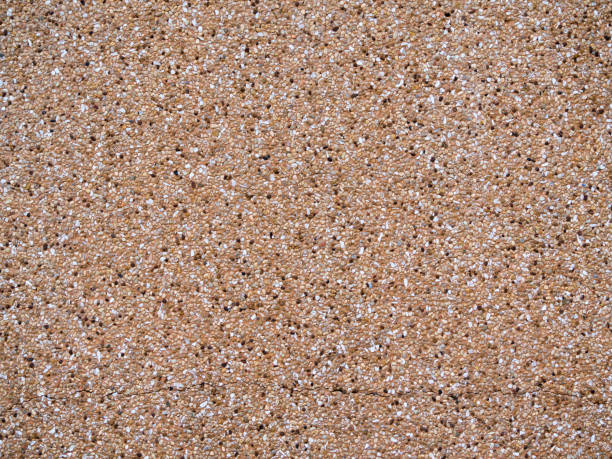

Big Stone Gap Virginia
info@lindahardware.pro
Big Stone Gap Virginia
info@lindahardware.pro

Enhance your Big Stone Gap Virginia landscape with durable, low-maintenance pea gravel. Ideal for driveways, gardens, and pathways, offering a clean, aesthetic, and environmentally friendly option.
Click Here To Call Us (877) 848-1711If you're looking for high-quality pea gravel in Big Stone Gap Virginia look no further. Our pea gravel is the perfect solution for a variety of landscaping and construction projects. Whether you need to create a beautiful garden pathway, improve drainage, or add a decorative touch to your yard, our pea gravel offers both functionality and aesthetic appeal.
Pea gravel is known for its smooth, rounded texture and attractive natural colors, making it an ideal choice for landscaping projects. It's versatile, durable, and easy to maintain. Additionally, it's a cost-effective solution for homeowners and contractors in Big Stone Gap Virginia seeking to enhance their outdoor spaces. Our pea gravel is sourced from trusted suppliers, ensuring top-quality materials for every order.
At Pea Gravel, we pride ourselves on providing pea gravel that meets the specific needs of our customers in Big Stone Gap Virginia . Our gravel is perfect for driveways, walkways, patios, and decorative garden beds, and it’s also an excellent option for erosion control and drainage solutions. With fast delivery options and expert advice, we ensure your project is completed on time and within budget.
Choose Pea Gravel for all your pea gravel needs in Big Stone Gap Virginia . Our commitment to quality, customer satisfaction, and timely service makes us the preferred choice for both residential and commercial clients across the area. Contact us today to get started!
Residential & commercial Pea Gravel
Quality services at affordable prices
Immediate 24/ 7 emergency services


Pea gravel is a versatile and practical choice for landscaping and construction in Big Stone Gap Virginia offering multiple benefits that make it ideal for the region's unique climate. Known for its smooth, rounded appearance, pea gravel is not only aesthetically pleasing but also highly functional, making it an excellent choice for a variety of outdoor applications.
In Big Stone Gap Virginia where the weather can fluctuate between heavy rains and intense heat, pea gravel provides excellent drainage. The small, loose stones allow water to flow through easily, preventing pooling or flooding that can damage plants and property. This makes it an ideal solution for driveways, walkways, and garden paths, especially in areas prone to heavy rainfall or frequent storms.
Additionally, the heat-resistant properties of pea gravel ensure that it stays cool even in the sweltering summer months. Unlike other materials, pea gravel does not absorb excessive heat, which can be a concern in hot climates. Its natural color also helps reflect sunlight, keeping outdoor spaces more comfortable.
Pea gravel’s durability also plays a crucial role in Big Stone Gap Virginia 's climate. With minimal maintenance required, it can withstand the fluctuations in temperature and humidity without losing its integrity, providing long-lasting beauty and function for homeowners and businesses alike.
For an eco-friendly and cost-effective landscaping solution, pea gravel is a smart choice in Big Stone Gap Virginia offering lasting value in both aesthetics and performance.
Residential & commercial Pea Gravel
Quality services at affordable prices
Immediate 24/ 7 emergency services
Proper drainage is critical for any commercial property, and pea gravel can provide an effective solution to manage water runoff. Using pea gravel in drainage systems ensures effective water flow while reducing the risk of flooding and erosion on your property.
, we are the experts in setting up commercial drainage systems that incorporate pea gravel. Our knowledgeable staff can assess the specific needs of your property to determine the optimal layout and materials for the best drainage performance.
Choosing us for your drainage solutions ensures you are working with a team that values quality and reliability. We offer lasting solutions that protect your investment while promoting a healthy environment on your commercial property.

Garden displays and outdoor exhibits offer opportunities for creativity and expression, and pea gravel serves as a beautiful, practical base. This material enhances the visual experience while providing excellent drainage and preventing weed growth, making it perfect for showcasing plants and sculptures.
, using pea gravel for garden displays allows you to create stunning focal points that attract attention while remaining functional. It integrates well with various plants and landscaping elements, enabling seamless design across your outdoor areas.
We specialize in crafting unique outdoor displays that resonate with your vision. By choosing us, you access craftsmanship and industry expertise to ensure your garden and outdoor displays are functional and visually captivating.
Managing erosion is crucial for protecting your commercial property and maintaining its integrity. Pea gravel is a highly effective solution for erosion control due to its natural properties that promote soil retention while allowing water to flow naturally.
At Pea Gravel, we provide erosion control strategies tailored specifically for commercial properties . Utilizing pea gravel, we design systems that prevent soil erosion while maintaining an appealing landscape that aligns with your property's aesthetic.
Our team examines the specific needs of your property and develops a comprehensive plan to address potential erosion issues effectively. With our expert installation and quality materials, you can maintain the beauty and functionality of your property without the burden of ongoing erosion problems. Choose us for your erosion control solutions where we prioritize durability and quality through innovative pea gravel applications.

Efficient drainage systems are crucial for property sustainability, and pea gravel plays an important role in their effectiveness. Its structure opens pores for water movement, preventing pooling and encouraging expedited drainage in various settings.
In Big Stone Gap Virginia we design and install pea gravel drainage systems tailored to your land's specific needs, whether they are simple or complex. Integrating the right gravel can mitigate issues related to water management and soil integrity while enhancing the overall landscape.
Choosing us means you partner with experts who understand the essential dynamics of drainage. We are dedicated to creating solutions that foster sustainability, ensuring your property benefits from optimal drainage performance.
Creating beautiful ponds and water features elevates the nature experience in any property, and pea gravel serves as a lovely base and border for these installations. Its natural appearance aligns perfectly with aquatic settings, enhancing the aesthetic while providing functional benefits.
, using pea gravel around ponds ensures proper drainage and reduces the risk of soil erosion. It's also an excellent choice for decorative purposes, adding texture and interest to the design surrounding water elements.
By collaborating with us, you access a wealth of expertise in creating pond and water features that harmonize with your landscape. Our focus on quality materials and customer satisfaction ensures your vision for tranquil outdoor spaces becomes a reality.
Achieving a realistic and functional artificial turf installation requires careful attention to the infill material used. Pea gravel is an innovative infill option that provides weight, stability, and natural drainage, enhancing the performance of artificial turf.
At Pea Gravel, we assist in the installation of artificial turf systems utilizing pea gravel infill designed to enhance the overall performance and longevity of your beautiful greens. Our team specializes in understanding the unique characteristics of your property, ensuring the turf installation is practical for your use case.
Using pea gravel as infill allows for high drainage capabilities, preventing water accumulation on the surface and ensuring a firm footing. This innovative solution keeps your artificial turf looking fresh and usable year-round, minimizing maintenance concerns. Choose us for professional artificial turf installations that balance beauty and functionality through expert pea gravel applications.

Creating clear boundaries for your driveway enhances aesthetic appeal and functionality while helping keep gravel in place. Pea gravel is an excellent choice for driveway edging, offering a visually appealing, natural solution that complements any landscape design.
In Big Stone Gap Virginia effectively edging your driveway with pea gravel results in a neat and finished appearance. It also helps define the boundaries of your landscaping while providing natural drainage, reducing the potential for erosion from washout during heavy rains.
Our expertise in installing pea gravel driveways ensures that you're receiving quality workmanship and material selection. We are committed to designing driveway solutions that enhance your property’s curb appeal and functionality.

When it comes to achieving the right blend for concrete mixes, incorporating pea gravel provides vital benefits. Pea gravel increases the durability of the concrete while enhancing the visual appeal due to its natural aggregates.
, our services include delivering high-quality pea gravel suited for concrete mixing. Using this material results in a strong, aesthetically pleasing finish for driveways, sidewalks, and foundations, ensuring long-lasting results.
By choosing us for your concrete mixing needs, you can trust that you are receiving top-quality materials and exceptional service. We work with you through every step of your project, ensuring that your concrete application meets your expectations and stands the test of time.
Years Experience
Expert Technicians
Satisfied Clients
Compleate Projects
At Linda Hardware, we provide high-quality pea gravel that enhances your landscaping projects, construction needs, and more across Big Stone Gap Virginia . Our commitment to delivering the best gravel products and outstanding customer service makes us the top choice for residents and businesses alike.
Premium Quality Pea Gravel
We source our pea gravel from the finest suppliers to ensure durability, uniformity, and natural appeal. Whether you're completing a driveway, garden path, or drainage project, our gravel's versatility offers a perfect solution. It is both easy to handle and affordable, making it an excellent choice for various applications in Big Stone Gap Virginia .
Customer-Centric Approach
At Linda Hardware, your satisfaction is our priority. We understand the importance of timely delivery, reliable service, and ensuring that every order meets your specific needs. Our team is dedicated to providing expert advice and personalized support, making your purchase of pea gravel a smooth and hassle-free experience.
Competitive Pricing and Reliable Service
We offer competitive pricing without compromising quality, making it easy for you to stay within budget. With prompt delivery across Big Stone Gap Virginia you can rely on us to supply the right amount of pea gravel, right when you need it.
Choose Linda Hardware for your pea gravel needs in Big Stone Gap Virginia . Our exceptional quality, service, and value set us apart as the leading supplier in the area.
In today's world, ensuring your driveway is both functional and aesthetically pleasing is more important than ever. Pea gravel is an exceptional material for driveways, offering a durable, cost-effective, and visually appealing solution for homeowners . Unlike traditional asphalt or concrete, pea gravel is permeable, allowing water to drain naturally, which helps prevent erosion and puddling.
When opting for pea gravel, you'll benefit from a variety of color options, creating a unique curb appeal that distinguishes your home. Additionally, pea gravel is easy to install and maintain, making it a popular choice for DIY enthusiasts. Our expertly sourced pea gravel ensures that you receive the best quality stone that resists degradation and stands the test of time.
But why choose us? We advocate for sustainable practices, ensuring our gravel is sourced responsibly. Our dedication to customer satisfaction guarantees that we provide not only premium materials but also expert guidance throughout your driveway project. Whether you're looking to enhance your home's value or simply want a reliable driveway solution, our team is here to help every step of the way.
When it comes to landscaping, creativity knows no bounds, especially when utilizing pea gravel as your primary material. This versatile stone can transform any garden or outdoor space into a stunning retreat. At Pea Gravel, we are passionate about helping you develop innovative and eye-catching landscaping ideas that employ the beauty of pea gravel, showcasing its endless possibilities.
From pathways to decorative borders, pea gravel adds texture and color to your outdoor landscapes. Its natural variations can enhance flower beds, create inviting seating areas, or even serve as a base for a charming fire pit setup. The soft tones of pea gravel complement vibrant flowers and lush greenery, providing a balanced, harmonious environment.
We also understand that maintenance is crucial for any landscaping project. Pea gravel prevents weed growth, saving you time on upkeep while keeping your outdoor spaces looking pristine. Our team of experts in Big Stone Gap Virginia will work closely with you to understand your vision, combining our knowledge with your ideas to create an outdoor space that reflects your unique style. With Pea Gravel's pea gravel landscaping solutions, your garden can become a tranquil oasis or an entertainer's dream.
Creating walkways or pathways in your yard can dramatically change the functionality and accessibility of your outdoor space. Pea gravel walkways offer an inviting, natural look while providing excellent drainage. Walkways made from pea gravel are easy to maintain, and their permeable nature ensures that rainwater seeps efficiently into the ground, promoting healthy soil and plants.
Custom pathways can also tie together different sections of your garden or yard, enhancing connectivity and aesthetic flow. When you choose us to design and install your pea gravel pathways, you’re selecting a partner with decades of experience in landscaping solutions .
Our commitment to quality is unmatched. We utilize only the top-grade pea gravel available to ensure your walkway lasts for years. Our team pays meticulous attention to detail, crafting paths that are not only functional but also harmoniously integrate with your landscape. Enjoy a stunning walkway that reflects your personal style and enhances your outdoor living experience.
Adding pea gravel to garden beds can enhance both the beauty and ecology of your plants. Pea gravel acts as a decorative mulch, helping to retain moisture while suppressing weeds. Its natural look complements flowers, shrubs, and other plants, providing a neat, organized appearance to your garden.
As experts in landscaping we understand the specific needs of garden beds in our region. Our pea gravel is locally sourced and specifically curated for optimal drainage and compatibility with various plants. Secure your outdoor oasis with our top-quality material designed to thrive 's unique climate.
Additionally, our knowledgeable team is here to assist you in selecting the right pea gravel size and color to match your specific garden aesthetic. When you partner with us, you’re investing in a thriving, sustainable garden bed that enhances your landscape while providing a beautiful backdrop for all your outdoor activities.
Patios are often the heart of outdoor entertainment spaces, and pea gravel can turn an ordinary patio into a stunning focal point. Offering a comfortable, non-slip surface, pea gravel patios are ideal for hosting family gatherings or quiet evenings under the stars. The small stones provide a soft, appealing texture underfoot without sacrificing durability.
At [your company name], we specialize in creating custom patio solutions that suit the needs and style of each homeowner . Our experience means we can guide you through the selection of materials, colors, and sizes of pea gravel that will not only enhance your patio's design but also provide lasting quality.
Our team of experts ensures that the installation is handled with precision and care, focusing on creating proper drainage to prevent pooling water and erosion. Why choose us? Our commitment to excellence and customer satisfaction ensures your patio will not only meet but exceed your expectations, making it the perfect addition to your home.
Safety and fun are paramount when it comes to playgrounds, and pea gravel is one of the best materials available for playground surfaces. Its soft texture provides excellent shock absorption, reducing the risk of injuries from falls, making it a safe option for children .
In addition to safety, pea gravel is a cost-effective option that allows for good drainage and does not support the growth of weeds, keeping your playground clean and low-maintenance. Our expert team can help you design and install pea gravel playgrounds that meet safety standards while also providing a charming, natural environment for play.
We only offer the best quality pea gravel, sourced from local suppliers, ensuring it is free from debris and harmful materials. Our staff is trained in best practices for playground surface installation, ensuring your project is done right the first time. Trust us to create a safe, enjoyable playground that both kids and parents will love.
Providing a safe and comfortable area for pets to play and exercise is essential for pet owners. Pea gravel offers an ideal surface for dog runs and pet areas due to its softness and drainage capabilities. A pea gravel surface is gentle on paws and helps prevent mud and mess in your yard during and after rainfall.
At Pea Gravel, we understand the importance of creating a perfect play zone for your furry friends in Big Stone Gap Virginia . Our team is dedicated to designing and installing pea gravel pet areas that prioritize safety, comfort, and ease of maintenance. We consider the unique needs of pet owners and the best dimensions to create a secure and enjoyable space.
Pea gravel provides excellent drainage, keeping surfaces dry and easy to clean, which is vital for maintaining a healthy environment for your pets. Whether you want a simple run or a lavish play area, we work closely with you to design a space that meets all requirements. Choose us for the best dog runs and pet areas in Big Stone Gap Virginia .
Enhancing flower beds with the right materials can transform any garden into a vibrant showcase. Pea gravel is an outstanding choice for flower beds as it beautifully contrasts with blooming flowers while providing excellent drainage and weed control.
At Pea Gravel, we specialize in designing flower beds that not only look stunning but also function well despite the climatic challenges. Utilizing pea gravel as a ground cover in your flower beds allows moisture retention while preventing weeds from overtaking your blossoms.
Incorporating pea gravel can also help define your flower beds and create clean, organized lines that lead the eye toward your carefully curated blooms. Our expert installation processes guarantee that your flower beds will flourish, allowing your garden to be the envy of the neighborhood. Trust us to deliver remarkable results with our pea gravel solutions for your flower beds.
Creating a rock garden can be a rewarding experience, bringing together different textures and colors in a cohesive design. Pea gravel is ideal for rock gardens, offering a blend of natural beauty and practicality. This versatile material, in Big Stone Gap Virginia can highlight your focal stones while providing a soft contrast that allows plants to shine.
Using pea gravel in your rock garden can help improve drainage and prevent soil erosion, which are crucial aspects of maintaining healthy plants. Furthermore, its lightweight nature allows easy rearrangement of elements for those who like to change their landscape designs frequently.
When you partner with us, you're working with a team skilled in creating harmonious outdoor spaces. We provide a range of pea gravel options to suit your rock garden design, ensuring that every detail resonates with your vision for your garden.
As water conservation becomes increasingly important, xeriscaping provides an excellent way to create beautiful landscapes that reduce water usage. Pea gravel is an ideal material for xeriscaping, facilitating drainage and providing a versatile ground cover that complements drought-resistant plants. homeowners can achieve a stunning landscape design while being responsible stewards of the environment.
Choosing pea gravel for your xeriscape means you'll enjoy low-maintenance beauty year-round. It helps stabilize the soil and prevents weed growth while allowing you to focus on developing a landscape that thrives with minimal irrigation.
Our team is dedicated to assisting you in creating a xeriscape that meets your aesthetic desires and sustainability goals. We provide consultation and implementation services that highlight the beauty of your outdoor space while effectively conserving water.
When it comes to parking lots, durability and proper drainage are of utmost importance. Pea gravel provides an alternative to traditional paving that can reduce costs while still offering excellent performance. we specialize in designing pea gravel parking lots that are not only functional but also blend seamlessly into the landscape.
The permeability of pea gravel makes it an environmentally friendly choice, promoting natural drainage and reducing runoff, which is beneficial for local ecosystems. Additionally, its easy maintenance ensures that the parking lot continues to look great over time.
By choosing us, you access a wealth of expertise in commercial-grade pea gravel installations. We are committed to delivering solutions that enhance your property's functionality and appearance while adhering to local regulations and standards.
Creating an inviting outdoor event space involves blending functionality with aesthetics, and pea gravel is a winning choice for this purpose. Whether you are hosting weddings, corporate events, or casual gatherings, pea gravel offers a spacious and versatile foundation while enhancing the visual appeal of your venue.
, we help clients design outdoor spaces that are welcoming, practical, and visually stunning. Pea gravel not only provides an excellent surface for events but also promotes natural drainage, helping keep your space dry during and after rain.
Our team understands the nuances of event planning, ensuring that your outdoor event space accommodates guests comfortably. We are committed to delivering quality customer service and expert guidance to help you bring your vision to life.
Creating effective and attractive commercial pathways is crucial for any business environment. Pea gravel pathways provide not only a charming aesthetic but also a practical solution for directing traffic through your property. Its brilliance lies in its organic texture and the ease of installation.
At Pea Gravel, we understand the unique needs of businesses in creating pathways . Our team is experienced in installing pea gravel pathways that balance functionality and beauty, ensuring smooth navigation through commercial spaces while maintaining a professional image.
Pea gravel offers effective drainage, reducing water pooling and mud accumulation that can deter customers from visiting. Additionally, its low-maintenance nature ensures you won’t frequently worry about upkeep, thereby allowing your staff to focus on running your business. When seeking expert installers for commercial pathways, we guarantee a seamless and attractive solution using quality pea gravel.
Business courtyards serve as extensions of your indoor space, allowing opportunities for creativity and tranquility. Utilizing pea gravel in your business courtyard design presents a sophisticated yet laid-back ambiance where employees and clients can relax and unwind.
In Big Stone Gap Virginia our approach to incorporating pea gravel in courtyards includes focusing on aesthetic appeal and functionality. This easily customizable material allows you to create intimate gathering spots and enhance natural beauty while providing excellent drainage.
By choosing our services, you're not just getting top-quality pea gravel—you're gaining a strategic partner dedicated to transforming your business’s outdoor spaces into welcoming environments that align with your brand and improve employee satisfaction.
First impressions are key in the retail world, and that starts from your storefront’s landscaping. Pea gravel is a brilliant choice that enhances visual interest, enables proper drainage, and creates inviting environments that encourage customers to enter.
At Pea Gravel, we understand the significance of high-quality landscaping for retail spaces . We offer custom solutions utilizing pea gravel, turning dull, lifeless storefronts into vibrant, appealing entrances that stand out in the crowded retail market.
Pea gravel allows for beautiful flower beds, defined pathways, and creative arrangements that catch the eye of passersby. Additionally, it provides excellent drainage, preventing water accumulation that could deter customers during wet seasons. Our experienced landscaping teams collaborate closely with store owners to understand their vision and execute it precisely. Choose us for unparalleled storefront landscaping solutions that leverage the beauty and practicality of pea gravel .
The landscaping of hotels and resorts plays a critical role in the guest experience, forming an essential part of the atmosphere. Pea gravel is an excellent choice for enhancing hotel landscapes, offering a harmonious balance of beauty and functionality.
, incorporating pea gravel into your hotel or resort landscaping can create inviting pathways, tranquil seating areas, and stunning visual features. The versatility of pea gravel means it's suitable for various design styles, from modern minimalism to rustic charm.
Choosing us means you partner with experts who understand the importance of creating lasting impressions on your guests. We provide tailored solutions that enhance your property’s unique character while ensuring practical benefits like drainage and ease of maintenance.
Creating inviting and safe public spaces is essential for community development, and pea gravel is an outstanding material choice for parks and playgrounds. Offering excellent drainage and a soft surface for play areas, pea gravel is suitable for various outdoor settings .
The versatility of pea gravel allows it to define play zones, walking paths, and other park features while adding visual appeal. It's also known for its eco-friendliness, contributing to sustainable designs that support local ecosystems.
By choosing our services, you're engaging with a team that prioritizes community well-being. We have extensive experience in public space design and execution, ensuring that we meet both safety and aesthetic standards while delivering value to your community.
Pea gravel is an excellent material choice for enhancing the aesthetics and functionality of your Big Stone Gap Virginia property. Known for its smooth, rounded texture and versatile applications, pea gravel offers a range of benefits that make it ideal for landscaping and construction projects.
One of the key advantages of using pea gravel is its low maintenance requirements. Unlike traditional gravel or other landscaping materials, pea gravel doesn’t need regular raking or re-grading. This makes it an ideal choice for homeowners in Big Stone Gap Virginia who prefer a low-maintenance yard that still looks great year-round.
Pea gravel also offers excellent drainage properties, making it perfect for areas with heavy rainfall or soil that tends to retain water. It helps to prevent water buildup, which can lead to erosion or mold growth. Whether used in driveways, pathways, or garden beds, pea gravel allows rainwater to flow freely, reducing the risk of water damage.
Additionally, pea gravel is cost-effective and durable. Its natural, neutral color complements various landscaping themes, making it a popular choice for patios, walkways, and decorative features. Over time, pea gravel holds up well against wear and tear, ensuring that your investment lasts for many years.
Incorporating pea gravel into your Big Stone Gap Virginia property is an easy way to boost curb appeal, increase functionality, and add value. Whether you’re revamping your garden or creating a new outdoor space, pea gravel is a versatile solution that offers lasting benefits.
Big Stone Gap is a town in Wise County, Virginia, United States. The town was economically centered around the coal industry for much of its early development. The population was 5,254 at the 2020 census.
The amount of pea gravel you need depends on the area you're covering. Linda Hardware provides a gravel calculator to help estimate how much you'll need based on your garden's dimensions.
Yes, pea gravel is suitable for slopes in Big Stone Gap Virginia especially when used with proper edging to prevent displacement. Its drainage qualities make it a great choice for sloped areas.
Linda Hardware offers high-quality pea gravel at competitive prices, with reliable delivery and expert advice to help you choose the right material for your project .
Yes, pea gravel is pet-friendly and a great choice for creating safe and comfortable outdoor spaces for pets in Big Stone Gap Virginia as it is soft and non-toxic.
Pea gravel does not attract pests and is a great choice for pest-free landscaping . It also allows water to drain properly, reducing standing water that could attract mosquitoes.
Yes, Linda Hardware offers delivery services for pea gravel directly to your location . Contact us to schedule a delivery at your convenience.
Absolutely! Pea gravel is perfect for creating a beautiful, low-maintenance patio offering a natural, rustic look while allowing water to drain easily.
Pea gravel creates a smooth, comfortable surface for walking, provides excellent drainage, and adds a natural aesthetic to pathways making it ideal for high-traffic areas.
To install pea gravel, start by leveling the ground, then lay down a weed barrier before spreading the gravel evenly. Linda Hardware can offer guidance or connect you with local professionals for installation.
To level pea gravel, use a rake to spread the gravel evenly, and then compact it using a mechanical compactor. This ensures a smooth and even surface for your project in Big Stone Gap Virginia .
Yes, pea gravel is a sustainable option as it is natural and durable. It doesn’t require frequent replacement, reducing waste, and it provides good drainage to prevent erosion.
The cost of pea gravel varies depending on the quantity and delivery distance. Contact Linda Hardware for a customized quote based on your needs .
Pea gravel typically ranges from 3/8 to 3/4 inch in diameter. It is smaller, rounder, and smoother than other types of gravel, making it ideal for decorative landscaping in Big Stone Gap Virginia .
Yes, pea gravel is an excellent choice for drainage systems due to its ability to allow water to pass through easily, making it ideal for landscaping and foundation drainage in Big Stone Gap Virginia .
You can order pea gravel from Linda Hardware online through our website, or by calling our customer service team for assistance with ordering and delivery to your Big Stone Gap Virginia location.
Yes, pea gravel is an excellent choice for driveways because it's easy to maintain, provides a natural look, and allows for proper drainage, preventing puddles.
Yes, pea gravel can withstand freezing temperatures. However, it's important to ensure proper compaction and drainage to prevent shifting and freezing problems in Big Stone Gap Virginia .
To prevent erosion, use edging to contain the gravel and ensure a solid base. Additionally, ensure the area has proper slope and drainage to avoid displacement.
Pea gravel is an ideal material for water features such as ponds, fountains, or dry creek beds, as it helps with drainage and creates a natural aesthetic .
To clean pea gravel, simply use a garden hose to wash off dirt and debris. For deeper cleaning, you can occasionally replace the gravel or wash it with a pressure washer.
Pea gravel is available in a variety of colors, from natural tones like brown and beige to more vibrant hues. Linda Hardware offers several color options for your landscaping needs .
Regularly rake the gravel to keep it level, and replace any gravel that gets displaced. Additionally, washing pea gravel annually helps to maintain its appearance.
Pea gravel is suitable for driveways with moderate traffic. However, for heavy traffic areas, consider adding a stabilizer or combining pea gravel with other types of gravel for better durability in Big Stone Gap Virginia .
To prevent weeds, install a weed barrier fabric beneath the gravel and maintain a layer of pea gravel at least 2-3 inches thick for optimal results.
Pea gravel is a small, rounded, smooth stone commonly used in landscaping for paths, driveways, and garden beds. It's versatile, aesthetically pleasing, and drains well, making it ideal for various outdoor projects.
Pea gravel is smaller, smoother, and more visually appealing than other gravel types, making it the best choice for areas where aesthetics and comfort matter, such as pathways or decorative features .
Yes, pea gravel is a great, soft surface for playgrounds, providing a cushioned landing for children. Just ensure the depth is sufficient to provide safety in Big Stone Gap Virginia .
Yes, pea gravel helps with erosion control by promoting water drainage and preventing soil erosion on slopes and hills .
Yes, pea gravel can be mixed with other materials like sand or crushed stone to achieve the desired texture and appearance for your project .
Pea gravel is highly durable and can last for many years with minimal maintenance, making it an excellent long-term investment for landscaping projects .
"Linda Hardware has always provided excellent products, and their pea gravel is no exception. I ordered gravel for my yard in Big Stone Gap Virginia and the quality was fantastic. The team is great to work with, and I’ll continue using them for future landscaping projects."
Profession
"I ordered pea gravel from Linda Hardware for my yard project, and I am beyond happy with the outcome. The gravel is of excellent quality, and the delivery was right on time. I will definitely use them again for my landscaping needs in Big Stone Gap Virginia ."
Profession
"The pea gravel I ordered from Linda Hardware was just what I needed. The quality was excellent, and the service was fast and friendly. The delivery was right on schedule, and the team was a pleasure to work with. I highly recommend them in Big Stone Gap Virginia ."
Profession
Big Stone Gap VA Pea Gravel Pros
(877) 848-1711
info@lindahardware.pro
09.00 AM - 09.00 PM
09.00 AM - 12.00 PM